A Visual Lip Reading Dataset for Assamese Compound Numeric Sequence Recognition
A dataset and recognition baseline for Assamese numeric sequences. The accompanying research combines 3D convolution, Gabor features, a bidirectional GRU, and attention.
A Lightweight Framework for Landmark-Only Visual Lip Reading in Low-Resource Language
A compact model processes lip landmarks with a Transformer encoder, bidirectional GRU, and temporal attention. The model uses 0.38 million parameters and 0.04 GFLOPs for a 50-frame input.
LipKeyFormer architecture. Mouth images illustrate landmark extraction; the classifier receives landmark features. Open the image for full detail.
LIPKEYFORMER / WORD CLASSIFICATION
Results across two datasets
Accuracy and macro F1 describe word classification and are not directly comparable to sequence word error rate.
LipKeyFormer results
Dataset
Accuracy
Macro F1
GRID
90.4%
88.9%
VLRASN-112
76.4%
42.7%
02 / DATASETS
Language resources for Assamese
112
WORD CLASSES
VLRASN-112
A dataset of 300 compound numeric sequences covering 112 word classes. Its numeric vocabulary supports studying word boundaries within longer number expressions.
1,000
SENTENCES
VLRAS-1000
A dataset of 1,000 everyday three-word sentences, with 956 word tokens, 250 speakers, and 25,000 videos.
A word in motion: hazar
All 15 consecutive mouth frames for the word hazar in sentence 1052, ordered from frame 0005 to 0019.
0005
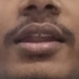
0006
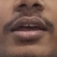
00070008
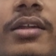
0009
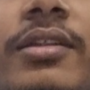
0010
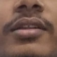
00110012
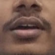
0013
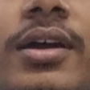
0014
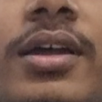
001500160017
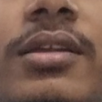
00180019
Original frame order and numbering are preserved. Scroll across to follow the lip movement.
Participant sample
Three sentence examples from speaker S271. Each preview shows a mouth crop from the original frame sequence.
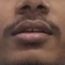
1051 xat hazar ekannobboi
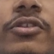
1052 ath hazar soyxo xatais
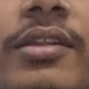
1053 pas hazar duxo biallis
The sample package contains video and audio clips, word annotations, validation outputs, 180 ordered mouth frames, and raw and normalized MediaPipe and dlib landmarks. Full recordings and detailed files require the dataset owner's approval.
Request sample access
Complete the researcher application with your name, institutional email, affiliation and research purpose. Agreement to academic-use and data-handling conditions is required. Institutional email ownership is verified separately before access is approved.
Your application is private. The dataset owner may contact you about verification, access or misuse. Submitting the form does not release any recording.
What an annotated sample contains
Each sentence connects synchronized video and audio to word timings, ordered mouth crops, and independent landmark files. The structure below illustrates the organization of an annotated sample.
S<number>/
├── output/
│ ├── annotations/ # CTC, manual and selected LAB copies
│ ├── clips/ # synchronized sentence media
│ └── validation/ # review reports and waveform plots
└── visual_dataset/ # ordered mouth frames and landmark CSVs
Preserving the source sequence
Frames retain their original temporal order, with continuous numbering such as 0001. Canonical mouth crops use lossless PNG. Sampling or padding happens later when preparing a model input.
Participant recordings and detailed sample files require approved access.
WBNet recognition examples
Ground truth
Prediction
WER
no hazar soyxo tris
no hazar soyxo tris
0%
xat hazar tinixo xat
xat hazar athaxi xat
25%
xataxi lakh athxo poxottor
xat hazar athxo unoxottor
75%
Examples show correct recognition and word substitutions in romanized Assamese. WER is the word error rate.
03 / METHODS & ONGOING WORK
Annotation and visual feature extraction
01
Align the session
Align the complete ordered transcript with the full recording using Assamese CTC forced alignment.
02
Review boundaries
Cut between adjacent aligned words at low-energy waveform locations. Reviewers accept, correct, merge, or split clips.
03
Select annotations
Choose reviewed CTC boundaries or validated manual WaveSurfer LAB annotations, retaining both copies and provenance.
04
Extract visual features
MediaPipe produces the canonical mouth crops. MediaPipe and dlib export separate raw and normalized landmarks.
AVLR Annotation Studio supports this workflow. Ongoing work includes dataset manifests, speaker-independent splits, and model-input sampling.
04 / LITERATURE
Research context
SENTENCE RECOGNITION
LipNet
Assael et al. combine spatiotemporal convolutions, recurrent modeling, and CTC to map variable-length video to text. This provides context for direct sequence recognition.
Xu et al. combine 3D convolution, a highway network, and a bidirectional GRU with a cascaded attention-CTC decoder. The model captures temporal context and maps video frames to text.
Park et al. use a lightweight Swin Transformer with spatial and temporal embeddings for lip reading. Hierarchical processing and window attention reduce computation while modeling lip movement.
Xue et al. study end-to-end lip reading with channel-aware feature selection. This approach focuses on selecting informative visual features for recognition.
Selected background reading, not an exhaustive literature survey. Cross-paper results require matching the dataset, speaker split, vocabulary, and evaluation metric.